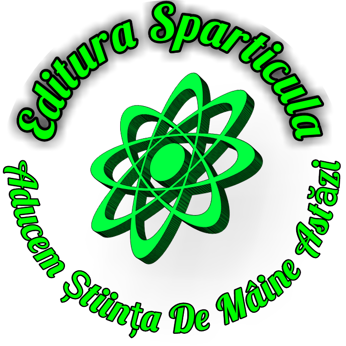

Inca caut
Am căutat ca să găsesc Un român să întâlnesc Să îmi spună-n românește Unde oastea se găsește, Unde Ștefan odihnește. C-am cătat în lung și-n lat De la Histria la Banat Un haiduc incălecat Să mă poarte jos in luncă Unde oastea mea triumfă. Nici la Iancu în Castel Nici în Deva, zid de fier N-am găsit niciun soldat Să-mi arate comandant Să mă înrolez de-ndată Să înfrunt turcimea toată Să mor ca falnic legionar Urmând pe domnul Căpitan. Să scriu cântece de jale Să răsune jos în vale Căci pe vârfuri infanteria Ține piept la Cavaleria Ce gonește-n ritm grăbit Spre românul adormit Să răpească libertatea Și credința-n unul Tatăl. In ploaie rece de obuze Răsună moarte-n imn de tunuri Acompaniată de tranșee În care vântul suflă note Ce adaugă durere. Azi dar iarăși nu mai văd Nu mai văd niciun român Ce s-a întâmplat cu neamul Ce odat n-avea stăpân? Toți au acceptat deodată Jugul pus pe cap de Spân. Și-au vândut la lume glia Libertatea, moștenirea. Au urmat cu toții drumuri Drumuri către nicăieri Si-au abandonat coliba Lăsându-și țara fără țel Doar tărâmul nimănui La mila străinului. O Dacie fără viitor Și-o lume fără tricolor. Au plecat ca să se-nchine Și spun că vor reveni curând Așteaptă vântul să se schimbe Și să se-ntoarcă oameni liberi Dar sunt lasi, și astea-s doar cuvinte Și ei nu sunt români, nu au fost și nu vor fi nicicând Au plecat din a lor țară Si-au slujit la vechi dușmani Nu se mai numesc Români, Căci Românul nu se-apleacă. Ci Românul moare drept Ridicând un tricolor Priveste moartea cu tărie Și sfidează jugul lor. Și nu e aurul ce-l plâng Nici pământul sujugat Nu plâng nici iarăși frații Ce istoria și-au uitat Ci plâng coroana ancestrală Ce prin sânge s-a păstrat Și azi se-nclină ca un leș La fiecare fir de apă Fiecare fior de vânt La și cel mai mic cuvânt. Trimite-mi Doamne Tu în cale Un român să întâlnesc Mai dă-mi doamne un român Un român, atât îți cer Să ne regăsim în codru Sa ne povestim iar dorul Pentru neamul nost de trac, Neam care nu va fi uitat. Să pornim la drum agale Pe cărările ce astăzi Nu mai sunt de mult umblate Sus în culmea muntelui Jos în Valea Jiului Lin pe malul Dunării Calm la umbra Sfinxului. Să umblăm pe șei călare Odihnind la câte un fag. Să cinstim pe fiii țării Care și viața și-au dat. Să unim o nouă oaste Călărind păduri de brazi Să nu rămână-n țară casă Fără de Român Vitez.